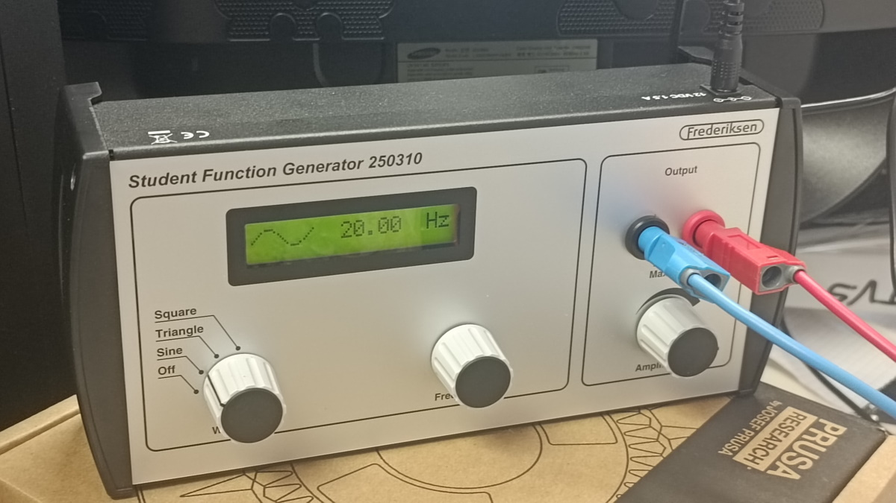
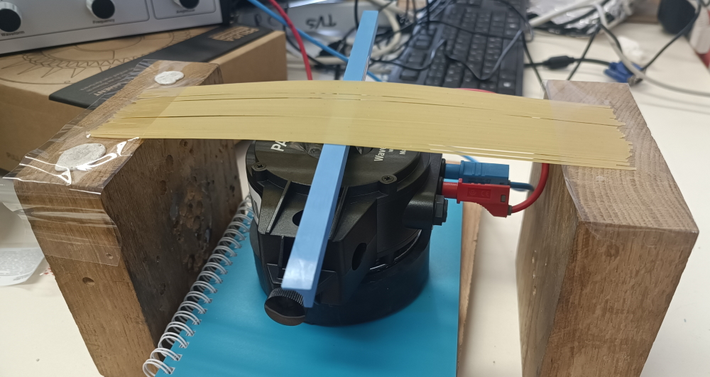

Vpliv števila špagetov v snopu na lomilno silo
V tem delu poskusa smo raziskovali, kako je največja sila, potrebna za zlom snopa špagetov, odvisna od števila špagetov v snopu. Pri vseh glavnih meritvah smo ohranili enako razdaljo med podporama \(L = 11{,}5\, \mathrm{cm}\), spreminjali pa smo število špagetov v snopu. Neodvisna spremenljivka je bila torej število špagetov \(n\), odvisna spremenljivka pa lomilna sila \(F_{lom}\). Snop smo obremenjevali v prečni smeri, dokler ni prišlo do porušitve.
Na začetku smo število špagetov v snopu določali iz mase snopa, vendar je ta metoda manj natančna, saj posamezni špageti nimajo popolnoma enake mase. Zato smo v nadaljevanju število špagetov v vsakem snopu določili neposredno s štetjem. Meritve, pri katerih je bilo število špagetov točno prešteto in je bil snop vpet na enak način, smo uporabili za glavno analizo odvisnosti \(F_{lom}(n)\).
Pri lomljenju snopov smo opazili, da se snop ne zlomi kot popolnoma homogeno telo. Najprej se je običajno zlomil eden izmed zgornjih špagetov, torej špaget, ki je bil najbližje mestu delovanja sile. Šele nato so se v zelo kratkem časovnem intervalu zlomili še ostali špageti. To pomeni, da sila v snopu ni bila porazdeljena popolnoma enakomerno. Zgornji špageti so bili bolj neposredno obremenjeni, spodnji pa so del sile prevzeli šele po prerazporeditvi napetosti. Zato snopa ne moremo obravnavati kot idealno monolitno palico, ampak kot sistem več šibko povezanih palic, med katerimi se sila porazdeljuje neenakomerno.
Za idealno homogeno palico, obremenjeno na sredini med dvema podporama, je največji upogibni moment \[M_{max} = \frac{F_{lom}L}{4}.\] Lom nastopi, ko največja upogibna napetost doseže kritično napetost materiala \[\sigma_{max} = \frac{M_{max}c}{I} = \sigma_{krit},\] kjer je \(I\) vztrajnostni moment prereza, \(c\) pa razdalja od nevtralne osi do najbolj oddaljenega vlakna. Iz tega sledi \[F_{lom} = \frac{4 \sigma_{krit} I}{L c}.\]
Če bi se snop špagetov obnašal kot ena sama zlepljena homogena palica, bi bil njegov vztrajnostni moment določen z integralom po celotnem prerezu snopa \[I_n = \int_{A_{n}} y^2 \, dA.\] Za snop posameznih špagetov lahko ta integral približno zapišemo kot vsoto prispevkov posameznih špagetov \[I_n \approx \sum_{i=1}^{n} \left( I_0 + A_0 y_i^2 \right),\] kjer je \(I_0\) vztrajnostni moment enega špageta okoli lastne osi, \(A_0\) ploščina njegovega preseka, \(y_i\) pa oddaljenost posameznega špageta od nevtralne osi snopa. Ta izraz pokaže, da bi bila pri popolnoma povezanem snopu odvisnost od števila špagetov lahko močnejša od linearne, saj k togosti ne prispevajo le posamezni špageti, ampak tudi njihova razporeditev v prerezu.
Naše meritve pa kažejo drugačno obnašanje. Z grafa je razvidno, da je v območju meritev od približno 10 do 50 špagetov odvisnost lomilne sile od števila špagetov zelo dobro opisana z linearno zvezo \[ F_{lom}(n) = (0{,}77297 \pm 0{,}04366)n + (2{,}775 \pm 1{,}355), \] kjer je \(F_{lom}\) podan v newtonih, \(n\) pa je število špagetov v snopu. Korelacijski koeficient je \(R^2 = 0{,}969\).
Tako velika vrednost \(R^2\) pomeni, da linearni model zelo dobro opiše eksperimentalne podatke. Naklon premice \[ a \approx 0{,}773 \, \mathrm{N}/\mathrm{špaget} \] lahko razumemo kot efektivni prispevek enega dodatnega špageta k lomilni sili snopa pri našem načinu vpetja. Vrednost prostega člena \[ b \approx 2{,}775 \, \mathrm{N} \] pa nima neposrednega fizikalnega pomena za \(n = 0\), saj snop z nič špageti ne more prenašati sile. Prosti člen je zato treba razumeti kot posledico eksperimentalnih pogojev, na primer začetnega stika med merilno napravo in snopom, trenja, načina vpetja ter dejstva, da linearni model velja samo v območju merjenih vrednosti.
Linearna odvisnost kaže, da se snop v našem poskusu ni obnašal kot popolnoma tog in homogen valj, temveč bolj kot skupek posameznih špagetov, ki silo prenašajo približno aditivno. Zato lahko uvedemo efektivni model \[ F_{lom}(n) ≈ \eta(n)n F_1 + F_{kontakt}, \] kjer je \(F_1\) lomilna sila enega špageta, \(\eta(n)\) faktor učinkovitosti prenosa sile med špageti, \(F_{kontakt}\) pa popravek zaradi vpetja, trenja in začetnega kontakta. Če je \(\eta(n)\) v merjenem območju približno konstanten, dobimo linearno zvezo \( F_{lom}(n) \approx an + b \), kar se dobro ujema z eksperimentalnim grafom.
Opažen sekvenčni lom lahko opišemo tudi z modelom prerazporejanja sile. Če posamezen špaget v snopu nosi delež αi\alpha_iαi celotne sile, potem je sila na njem \[ F_i = \alpha_i F, \] pri čemer velja \[ \sum_{i=1}^{n} \alpha_i = 1. \]
Prvi zlom nastopi pri tistem špagetu, za katerega je razmerje med obremenitvijo in kritično silo največje: \[ \alpha_i F \ge F_{i, krit} \] Ko se ta špaget zlomi, se njegova sila prerazporedi na preostale špagete. Zaradi tega se njihovi deleži \(\alpha_i\) povečajo, kar lahko sproži verižno porušitev celotnega snopa. To pojasni opažanje, da se najprej zlomi zgornji špaget, nato pa hitro še ostali.
Graf \(F_{lom}(n)\) zato kaže dve pomembni stvari. Prvič, lomilna sila z večanjem števila špagetov jasno narašča. Drugič, raztros točk okoli premice kaže, da število špagetov ni edini parameter, ki vpliva na lom. Pri enakem številu špagetov so bile izmerjene sile lahko različne, kar je najverjetneje posledica različnega vpetja, neenakomerne porazdelitve sile po prerezu snopa, majhnih razlik v debelini posameznih špagetov in mikroskopskih napak v materialu.
Za snop petnajstih špagetov linearni model napove \[ F_{lom}(15) = 0{.}77297 \cdot 15 + 2{.}775 = 14{.}37 \, \mathrm N. \] Ob upoštevanju negotovosti prileganja dobimo približno \[ F_{lom}(15) = 14{.}37 \, \mathrm N \pm 2{.}01 \, \mathrm N. \]
Ta rezultat je smiseln, saj se dobro ujema z neposrednimi meritvami za snop petnajstih špagetov pri prvem načinu vpetja. Meritve pri drugem in tretjem načinu vpetja so dale nekoliko nižje vrednosti, vendar sklepamo, da se je sila manj enakomerno porazdelila po snopu in zato dobimo nižje vrednosti. Kljub temu potrjujejo, da način vpetja pomembno vpliva na končni rezultat.
Iz meritev lahko zaključimo, da je število špagetov v snopu eden glavnih parametrov, ki določajo lomilno silo. V našem območju meritev je zveza med številom špagetov in lomilno silo približno linearna. To pomeni, da se odpornost snopa povečuje skoraj sorazmerno s številom špagetov, vendar snop zaradi neidealnega stika med špageti, nehomogenosti materiala in sekvenčnega loma ne deluje kot popolnoma homogena palica.
Upogibanje špagetov
Zanimalo nas je, ali se bo lomljivost špagetov spremenila, če jih velikokrat upognemo. Za izvedbo tega poskusa smo si pomagali s funkcijskim generatorjem (fotografija ) in gonilnikom signala (fotografija ). Vrsto špagetov smo na koncih pritrdili na lesena bloka, oddaljena 20 cm, na sredini pa so bili podprti s prečko, ki je nihala gor in dol z nastavljeno frekvenco (fotografija ). To, da je dejanska frekvenca nihanja bila res enaka nastavljeni, smo potrdili tako, da smo nihanje posneli s 120 sličicami na sekundo in video analizirali (primer: video ).


Gonilnik smo med poskusom štirikrat ustavili in izmerili lomilno silo pri 20 cm razmiku med podporama, vsakič za 8 špagetov. Pri tem smo iz časa upogibanja \(t\), ki smo ga merili s štoparico, in frekvence \(\nu\) izračunali tudi približno št. nihajev \(N=\nu t\). Začeli smo s frekvenco 10 Hz, potem pa smo zaradi časovne omejitve po prvi ustavitvi frekvenco zvišali na 20 Hz, po drugi ustavitvi pa na 30 Hz.
Rezultati
Pridobljeni podatki nakazujejo na to, da sila, potrebna za zlom špageta, na začetku s številom nihajev narašča, nato pa se ustali. Da bi to zares potrdili, bi morali poskus ponoviti tako, da vmes ne bi spreminjali frekvence upogibanja. Morda je ravno sprememba frekvence na 30 Hz, po 2. ustavitvi, povzročila to, da sila ni več naraščala.
Poskus bi lahko ponovili še s snopi špagetov, da ugotovimo, ali tudi za snope odvisnost sile od upogibov izgleda enako.
Močenje špagetov
Površinsko smo preverili tudi vpliv namakanja špagetov na lomno silo. To smo preverili za posamezne špagete N°1 in za snop 15 špagetov. Namakali smo jih v vodi s sobno temperaturo 22,6 °C.
| razdalja (cm) | sila (N) | čas (min) | število |
|---|---|---|---|
| 11,5 | 0,449 | 20 | 1 |
| 11,5 | 0,374 | 20 | 1 |
| 11,5 | 0,351 | 20 | 1 |
| 11,5 | 0,366 | 20 | 1 |
| 11,5 | 0,389 | 20 | 1 |
| razdalja (cm) | sila (N) | čas (min) | število |
|---|---|---|---|
| 11,5 | 2,564 | 20 | 15 |
| 11,5 | 2,141 | 20 | 15 |
| 11,5 | 1,960 | 20 | 15 |
| 11,5 | 2,156 | 20 | 15 |
Sila, potrebna za zlom enega namočenega špageta, je bila 0,39 N ± 0,04 N, za zlom suhega špageta pa 0,73 N ± 0,07 N.
Sila, potrebna za zlom snopa petnajstih namočenih špagetov, je bila 2,2 N ± 0,3 N, silo, potrebno za zlom enakega števila suhih špagetov pa lahko napovemo s pomočjo grafov [ref] in [ref] (vpliv debeline na silo) (TODO, test sklic: ):
\[ F_{\mathrm{N°3}} (n)=n(0{,}77 \,\mathrm N \pm 0{,}05 \,\mathrm N) + (2{,}78 \,\mathrm N \pm 1{,}36 \,\mathrm N) \] \[ F_{\mathrm{N°1}} (n)=0{,}565 \cdot F_{\mathrm{N°3}} (n) \] \[ F_{\mathrm{N°1}} (15)=8{,}1 \,\mathrm N \pm 1{,}2 \,\mathrm N \]Lomilna sila za en špaget se je z 20-minutnim namakanjem zmanjšala za 46 %, za snop 15 špagetov pa za 72 %.
Potrdimo lahko torej, da 20-minutno namakanje zmanjša odpornost špagetov na zlom.